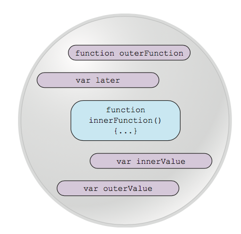

Ejemplo extraido del Libro Secrets_of_the_JavaScript_Ninja_Second.pdf - CHAPTER 5.1 - Understanding closures
A closure allows a function to access and manipulate variables that are external to that function. Closures allow a function to access all the variables, as well as other functions, that are in scope when the function itself is defined.
When we declare innerFunction inside the outer function, not only is the function declaration defined, but a closure is created that encompasses the function definition as well as all variables in scope at the point of function definition. When innerFunction eventually executes, even if it’s executed after the scope in which it was declared goes away, it has access to the original scope in which it was declared through its closure
That’s what closures are all about. They create a "safety bubble" of the function and the variables in scope at the point of the function’s definition, so that the function has all it needs to execute. This bubble, containing the function and its variables, stays around as long as the function does.
